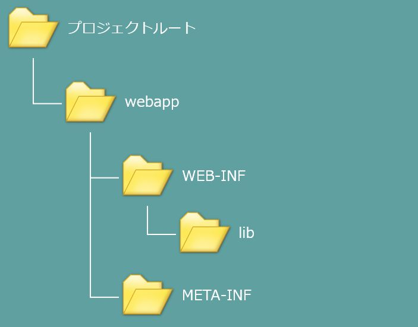

JavaプログラムからデータベースへアクセスするためにはJDBCドライバというJavaプログラムとデータベースを接続するための特殊なライブラリを使う必要があります。JDBCドライバはデータベース製品ごとに異なった実装となっており、OracleにはOracleのJDBCドライバ、MySQLにはMySQLのJDBCドライバという具合に、製品ごとに異なったものを使う必要があります。本教育プログラムではOracleを利用しますのでOracleのJDBCドライバをこちらからダウンロードしてください。
本教育プログラムに沿ってWebアプリケーションプロジェクトを作成している場合は上記のようなフォルダ構成になっているはずです。ダウンロードしてきたJDBCドライバはlibフォルダの中に配置してください。TomcatはWEB-INFフォルダ配下のlibフォルダをクラスパスに含めるように設定されていますので、JDBCドライバだけでなく、外部ライブラリを使う場合は全てこのlibフォルダ配下に配置することになります。
Tomcatにはデフォルトでコネクションプーリング（DBCP）という仕組みがあります。これはJavaとデータベースの接続情報をあらかじめ貯蔵（プール）しておいて、毎回データベースとの接続を確立するのではなく予めデータベースとの接続を確立してプールしておくことで、ただちにデータベースにアクセスすることができるようにするための仕組みです。DBCP自体はそれほど難しい仕組みではないのですが、あらかじめ準備しておかなければならないことが多く、それを一つ一つ細かく解説することは本教育プログラムの趣旨から逸脱しますので、ここは本稿で説明する通りに準備を行っていください。
準備1：context.xmlの作成
以下の内容でcontext.xmlという名前のファイルを作成してください。
<?xml version="1.0" encoding="UTF-8"?>
<Context path="/{プロジェクト名}" reloadable="true" docBase="{ワークスペースへのパス}\{プロジェクト名}\webapp">
<Resource name="jdbc/oracle"
auth="Container" type="javax.sql.DataSource"
maxActive="150" maxIdle="50" maxWait="15000"
username="DWH_SZ" password="DWH_SZ" driverClassName="oracle.jdbc.driver.OracleDriver"
url="jdbc:oracle:thin:@ulti-serv2:1521:ultidb1"/>
</Context>
プロジェクト名が「ultimark」、プロジェクトのワークスペースが「C:\pleiades\workspace」だった場合は以下のようになります。
<?xml version="1.0" encoding="UTF-8"?>
<Context path="/ultimark" reloadable="true" docBase="C:\pleiades\workspace\webapp">
<Resource name="jdbc/oracle"
auth="Container" type="javax.sql.DataSource"
maxActive="150" maxIdle="50" maxWait="15000"
username="DWH_SZ" password="DWH_SZ" driverClassName="oracle.jdbc.driver.OracleDriver"
url="jdbc:oracle:thin:@ulti-serv2:1521:ultidb1"/>
</Context>
作成したcontext.xmlはMETA-INFフォルダに配置してください。
準備2：データベースオブジェクトの作成
Javaプログラムからデータベースへのアクセスを仲介するためのオブジェクト（データベースオブジェクト）を作成します。データベースオブジェクト自体は単なるJavaクラスです。とは言え、現時点でデータベースオブジェクトを作成するのは難しいと思いますので、上記の設定内容でcontext.xmlを作成したという前提ですぐに使えるデータベースオブジェクトのソースコードを作成しました。こちらからダウンロードし、jp.co.ultimark.commonパッケージ配下に配置してください。
準備3：Javaプログラムからのデータベース接続確認
任意のJSPに以下の記述を追加してください。
<%= new jp.co.ultimark.common.Database().connect() != null >
trueと表示されればデータベースへの接続は成功です。
ここまで準備してようやくJavaからデータベースの操作が行えるようになりました。Javaでデータベースを操作する際に知っておかなければならないのは主に以下の三つです。
Connectionオブジェクトはデータベースとの接続そのものをあらわすオブジェクトです。データベースと対話する役割はConnectionオブジェクトが一手に引き受けます。Statementオブジェクトは端的に言ってSQLそのものをあらわすオブジェクトです。ここで言うSQLとはDDL、DMLを両方含みます。そして最後に紹介するのがResultSetオブジェクトです。名前で何となく想像がつくかもしれませんが、このオブジェクトはデータベースへ問い合わせをした結果を保持します。つまりSELECT文の実行結果です。
Javaからデータベースを操作する際はこの三つのオブジェクトへの理解が欠かせません。このうちConnectionオブジェクトは（あまりにも重要過ぎて）プログラマーが自分で管理することはまずありません。このConnectionオブジェクトをプログラマーにかわって管理するのが前述のDBCPだと考えてください。従って本稿ではConnectionオブジェクトを除いた他二つのオブジェクトに焦点を当てて解説していきます。
先に説明した通り、StatementオブジェクトはSQLをあらわすオブジェクトです。Statementオブジェクトは必ずConnectionオブジェクトから生成されます。Statementオブジェクトの基本的な使い方を見てみましょう。
// connはConnectionオブジェクト
Statement statement = conn.createStatement();
statement.execute("UPDATE XXXX SET *** = '001' WHERE @@@ = '568'");
Statementオブジェクトのexecuteメソッドの引数を見れば一目瞭然ですが、Statementオブジェクトは指定されたSQLを実行する役割を持っています。上記はUPDATE文の例ですが、INSERT、SELECT、DELETEやDDLもStatementオブジェクトを介して実行することができます。
ResultSetオブジェクトはSQLの実行結果を保持するオブジェクトです。関係データベースは表形式でデータを管理していますが、SELECT文の実行結果もまた表形式になっています。従って、必然的にResultSetオブジェクトは表形式のデータ構造となっています。ResultSetオブジェクトはSQLの実行結果として生成されるオブジェクトですから、常にStatementオブジェクトから生成されます。
// connはConnectionオブジェクト
Statement statement = conn.createStatement();
ResultSet resultSet = statement.executeQuery("SELECT XXX FROM ***");
上記の通り、ResultSetオブジェクトは常にStatement#executeQueryメソッドの戻り値として生成されます。ResultSetオブジェクトは表形式となっており、1レコードずつ取り出して処理することができます。それではResultSetオブジェクトの取り扱いを確認しましょう。
// resultSetはResultSetオブジェクト
while (resultSet.next()) {
String columnValue = resultSet.getString("ColumnName");
}
上記の例ではあるテーブルのColumnNameという列から文字列を取り出してcolumnValueに格納しています。しかし、これを実行するためにはColumnNameが文字列データを格納している必要があります。当然、データベースには文字列データだけでなく、数値型のデータや日付型のデータも格納されますので、getStringメソッドだけでは処理しきれません。ResultSetオブジェクトではこれらのようなデータにも対応できるようにgetIntメソッドやgetDoubleメソッド、getDateメソッドなどありとあらゆるデータ型に対応したメソッドが用意されています。
ここまでの解説で一応はJavaからデータベースを操作する方法を学ぶことができました。しかし、実際にはこれほど単純ではなく、例えば上記の解説では条件付きのSELECT文を発行したいという場合には対応できません。条件付きのSQLを発行するためにはPreparedStatementオブジェクトを用います。PreparedStatementもStatementと同様にConnectionオブジェクトから生成されます。
// connはConnectionオブジェクト
PreparedStatement statement = conn.prepareStatement("SELECT * FROM XXX WHERE CODE = ?");
statement.setString(1, "0000");
PreparedStatementを利用するにはConnection#prepareStatementメソッドを利用します。引数はSQLですが、WHERE句に注目してください。CODE = ?となっていますが、この?の部分が検索条件となる値になります。次の行のsetStringメソッドによって1番目の?を"0000"に置き換えているという意味になります。このPreparedStatementオブジェクトが発行するSQLは以下のようなものになります。
SELECT * FROM XXX WHERE CODE = '0000'
今回は少し覚えることが多いですが、これらの基本を理解してしまえばJavaから自由自在にSQLを扱うことができるようになります。しっかりと覚えておきましょう。